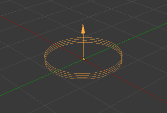

Introduction¶
Force Fields offer a way to influence a simulation, in example to add extra movement. Particles, Soft Bodies, Rigid Bodies, and Cloth objects can all be affected by forces fields. Force Fields automatically affect everything. To remove a simulation or particle system from their influence, simply turn down the influence of that type of Force Field in its Field Weights panel.
- All types of objects and particles can generate fields, but only curve object can bear Curve Guides fields.
- Force Fields can also be generated from particles. See Particle Physics.
- The objects need to share at least one common layer to have an effect.
You may limit the effect on particles to a group of objects (see the Particle Physics page).
Creating a Force Field¶
Reference
| Mode: | Object Mode |
|---|---|
| Panel: |
To create a single Force Field, you can select and select the desired force field. This method creates an Empty with the force field attached.

Vortex force field. |

Wind force field. |

Force force field. |
To create a field from an existing object you have to select the object and change to the Physics tab. Select the field type in the Fields menu.
Note
After changing the fields Fields panel or deflection Collision panel settings, you have to recalculate the particle, soft body or cloth system by Free Cache, this is not done automatically.
Particles react to all kinds of Force Fields, soft bodies only to Force, Wind, Vortex (they react on Harmonic fields but not in a useful way).
Common Field Settings¶
Most Fields have the same settings, even though they act very differently. Settings unique to a field type are described below. Curve Guide and Texture Fields have very different options.
- Shape
Sets the direction which is used to calculate the effector force. For force fields from an empty object only Point and Plane shapes are available, as for a field from a 3D object there are additional Surface and Every Point options, and Curve for a field from a curve.
- Point
- Point with omni-directional influence. Uses the object origin as the effector point.
- Plane
- Influence only in the local Z direction.
- Surface
- The force field acts on a 3D object’s surface. In this case, the Z axis is the surface normal.
- Every Point
- Uses every vertex in the mesh object as an effector point.
- Curve
- The force field acts along a curve object.
- Strength
- The strength of the field effect. This can be positive or negative to change the direction that the force operates in. A force field’s strength is scaled with the force object’s scale, allowing you to scale up and down the scene, keeping the same effects.
- Flow
- If non-zero, the effective force depends on the particle velocity. The value defines how quickly the effector force (acceleration) will be converted into the constant “air flow” velocity.
- Noise Amount
- Adds noise to the strength of the force.
- Seed
- Changes the seed of the random noise.
- Affect Location
- Influence the location of particles.
- Affect Rotation
- Influence the rotation of particles.
- Absorption
- Force gets absorbed by collision objects.
Falloff¶
Here you can specify the shape of the force field (if the falloff Power is greater than 0).
- Shape
- Sphere
- The falloff is uniform in all directions, as in a sphere.
- Tube
- The falloff results in a tube-shaped force field. The field’s Radial Power can be adjusted, as well as the Minimum and Maximum distances of the field.
- Cone
- The falloff results in a cone-shaped force field. Additional options are the same as those of Tube options.
- Z Direction
- The force can be set to apply only in the direction of the positive Z axis, negative Z axis, or both.
- Power
- How the power of the force field changes with the distance from the force field. If r is the distance from the origin of the object, the force changes with 1/rpower. A falloff of 2 changes the force field with 1/r2, which is the falloff of gravitational pull.
- Max Distance
- Makes the force field affect other objects only within a specified maximum radius (shown by an additional circle around the object).
- Min Distance
- The distance from the object’s origin, up to where the force field is effective with full strength. If you have a falloff of 0 this parameter will have no effect, because the field is effective with full strength up to Max Distance (or the infinity). Shown by an additional circle around the object.